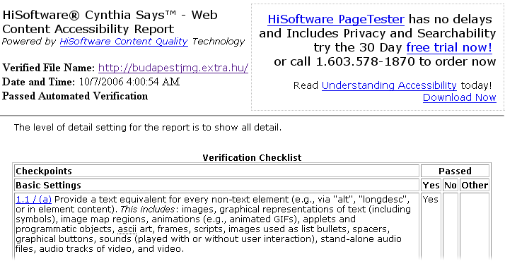
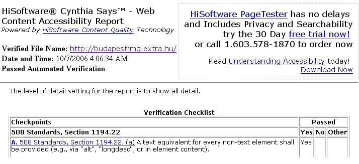

Katalin Pallósi
In my freetime I like reading, making handworks and baking. I also like dancing, ice-skating, swimming and riding a bike. My favorite colours are green, brown and orange. I'm also the proud owner of nine fish.
In this project I wrote some quize-questions, collected and translated bibliography for six scenes. Besides these the introduction text was also written by me.
Judit Takács
I don’t really have an exact idea about what I would like to do in the future but at the moment I am interested in natural sciences.
In this programme I wrote about several scenes like the Sándor Palace or the Fishermen’s Bastion; I did the translations of them and I wrote some exercises as well.
In my free time—which unfortunately I don’t really have—I like listening to music, reading and going out with my friends.
Diána Giczi
I live in a small village, 45 km from Kõszeg that is why I spend my weekdays in a students’ hostel. My favourite spare time activities are listening to music, reading, being with friends and doing sports.
In this project, I wrote about four of the scenes and helped in scanning photos, the translation of exercises and solutions as well.
Teréz Szárnyasné Tóth
Beyond the school tasks I make projects with my students quite often.
Mafia
Bibliography
- Gizella Szatmári: Walks in the castle district
- Tamás K. Pintér–Anna Kaiser: The Churches of Budapest
- Balázs Dercsényi: Hungary; Merhavia - Kaleidoszkóp, Budapest, 1999
- József Vadas: A guide to Budapest museums
- Török András: Budapest – A Critical Guide, Park könyvkiadó Kft.
- Pálfy Katalin: Out and about in Hungary, Well-Press Kiadó Kft.
- Száraz György: Budapest – A City set in time kiadó: Corvina Kiadó Kft.
- Duncan J. D. Smith: Only in Budapest, Jel-Kép Mõvészeti Szolgáltató Bt.
- Száraz György: A budai várnegyed – Buda Castle, Corvina Kiadó Kft.
- Math in HTML (and CSS)
- Preparing your CSS for Internet Explorer 7
- PHP: Hypertext Preprocessor – online documentation
- XHTML 1.1 – W3C’s newest HTML recommendation
Technical info
The page uses only valid XHTML 1.1 and CSS3 with minimal JavaScript and Flash for the map. It fits the requirements of Section 508 and the strictest rules of WAI. All pages are directly printable due to the print stylesheet. The recommended resolution is 1024 by 768 or more, however it is possible to browse the page with the resolution of 800 by 600 without using the horizontal scrollbar.
The page was written only by team members, all the markups, stylesheets and scripts (including the equation editor) were made by Gábor Szárnyas. The Flash map was made by Tomasz Kovács.
Recommended browsers are Mozilla Firefox, Internet Explorer, Apple Safari and Opera but the page is accessible even with text browsers and text-to-speech programmes.
WAI report
The Web Accessibility Initiative (WAI) works with organizations around the world to develop strategies, guidelines, and resources to help make the Web accessible to people with disabilities.
You may want to perform the WAI verification now or see the report below.

see the full report (cached) | close reportSection 508 report
The Web Accessibility Initiative (WAI) works with organizations around the world to develop strategies, guidelines, and resources to help make the Web accessible to people with disabilities.
You may want to perform the Section 508 verification now or see the report below.

see the full report (cached) | close report